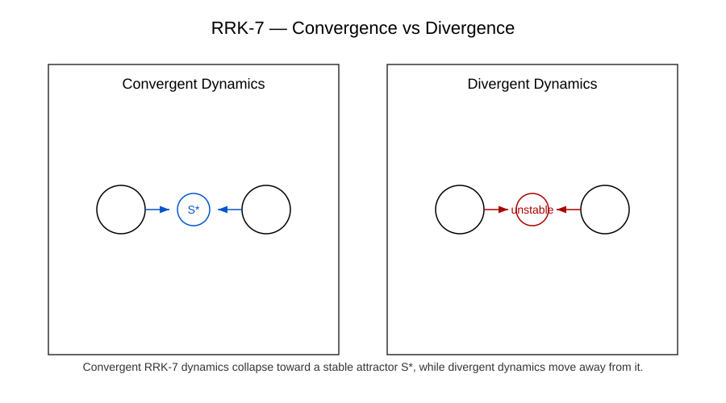

Figure 4 — Stability Thresholds
Diese Figur zeigt die Stabilitätsschwellen rekursiver Systeme. Sie illustriert die Übergänge zwischen stabilen, metastabilen und instabilen Zuständen innerhalb rekursiver und meta‑rekursiver Dynamiken.